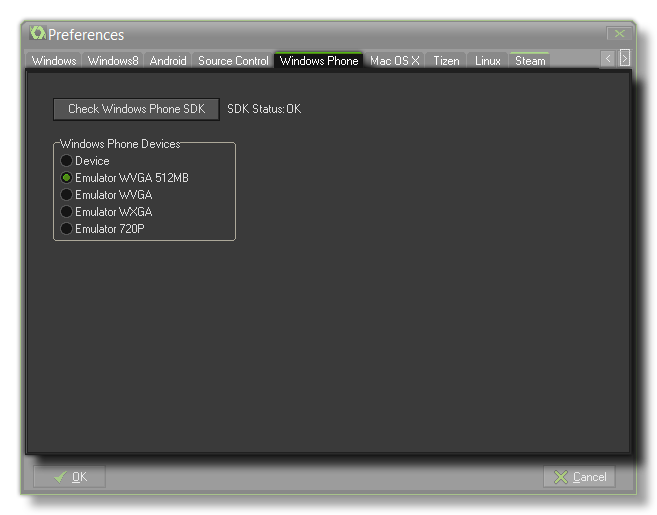

 The first thing to
do before starting to test or create a Windows Phone 8 game is to
set up this section of the preferences for the Windows Phone 8
module. All you really have to do here is check that SDK Status
says "OK" (GameMaker: Studio should have already performed
the necessary checks when you upgraded to the module, but if not
you can use the "the click the "Check SDK" button (Read the section
on SDK Problems for help) to force GameMaker: Studio to perform
this action.
Next is the part where you can select the device that you wish to
have the emulator use for testing your game on. The available
devices are:
- Device - Your own Windows Phone 8 test device, plugged into your PC by data cable.
- WVGA (512mb) - Emulates a memory-constrained Windows Phone 8 phone with a display size of 480 x 800.
- WVGA - Normal Windows Phone 8 with a display of 480 x 800.
- WXGA - Large Windows Phone 8 display at 768 x 1280.
- 720p - HD display at 720 x 1280.
Note that you can change the emulator target at any time through
the preferences, and should you have any problems with the
emulator, as long as the SDK is installed and checked, you can
always test using a Windows Phone device connected to the PC.
WARNING! When building your final game package, you
must have this set to "Device" otherwise your submission to
the Windows Store will fail.